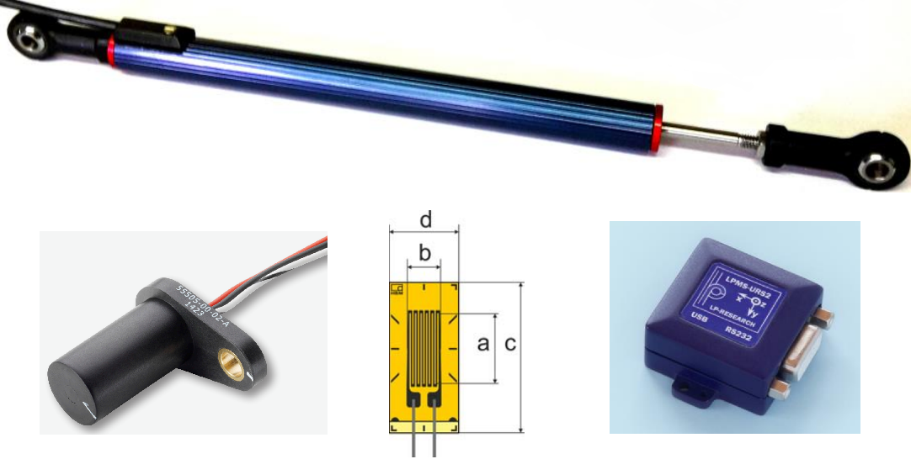
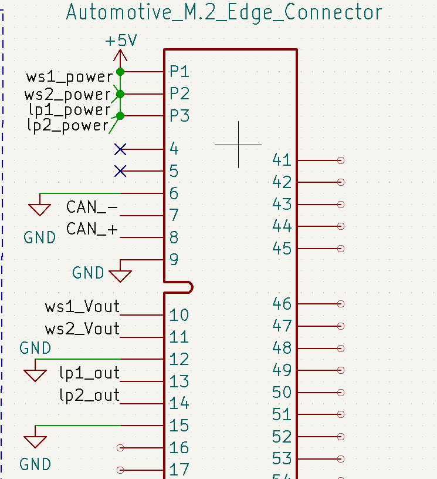

I have been working on designing a suspension testing system for my collegiate Formula team's suspension
system. In order to validate our design assumptions and understand any issues in previous suspension iterations,
we want to be able to measure certain high-level characteristics of our suspension. The factors we want to measure are our
acceleration, ride and roll, shock displacement, wheel speed, and the force going through our suspension members.
The sensors that we will implement include wheel speed sensors, linear potentiometers to measure shock displacement,
strain gauges to measure force going through suspension members, and an IMU to measure acceleration and roll.

Our specific sensors: linear potentiometers (top), wheel speed sensors (bottom left), strain gauges (bottom center), and IMU (bottom right).

KiCAD layout example of the pinouts of our M.2 connector, which connect our sensors to our ATMega16.
We initially looked for sensors that fit our sensitivity, voltage, and size requirements. We then created a blcok diagram in Miro which is pictured at the top of the page.
Upon finalizing the block diagram, we began our KiCAD layout, intially making use of hierarchical sheets, then creating individual projects for each board. We will now be sending out the boards for shipping,
then populating them when they return to Olin.